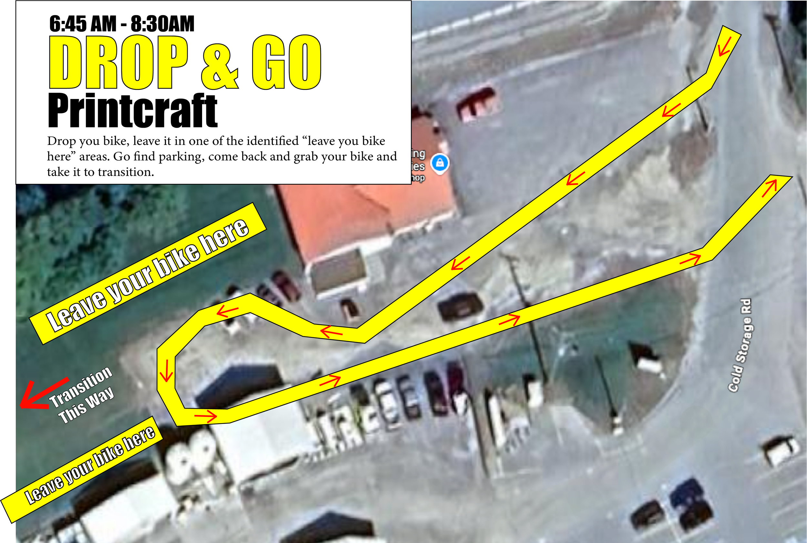
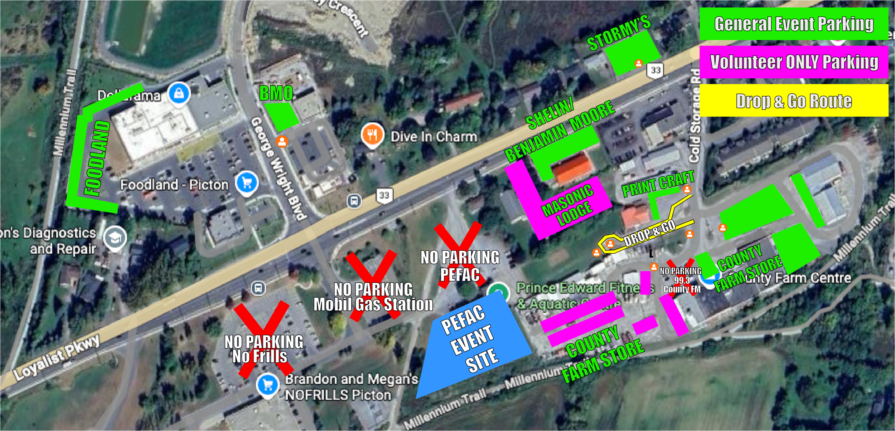

2026 PARTICIPANT GUIDE
To help you feel race ready at the 2026 County Kids of Steel, we have prepared a quick reference guide to help with the day’s events.
Saturday, June 6 — Pre-Race Day
Race kit pick-up at PEFAC: 4:00–7:00 PM
No bike drop-off on Saturday.
Sunday, June 7 — Race Day
6:30 AM — Transition opens
6:45 AM — Race kit pick-up and body marking opens
8:30 AM — Race kit pick-up/body marking closes
8:45 AM — Transition closes
8:50 AM — Welcome and race briefing
9:00 AM — First race starts
12:30 PM — Awards and closing remarks
All bikes and race gear must be in transition by 8:45 AM, no matter what time your race starts. Check Age Group Start times and heat to the PEFAC group exercise room 30 minutes prior to your age group start time.
Drop & GO

Parking

Arrival Plan
There is no race day parking at PEFAC. Use the designated parking lots nearby and follow signs and volunteer directions.
Bike Drop & Go: Cars may briefly pull in along Cold Storage Road to unload bikes and bags onto the grass behind Print Craft. Drivers must then park their car at a designated parking area (not the bike drop & go line) and return to collect bikes and bags before going to check-in or transition.
If you didn’t pick up your Race Kit on Saturday, go to Athlete Check-In located inside PEFAC and then head into transition to start setting up your bike and race day gear. If you have already picked up your Race Kit, head directly to transition to set up at your designated bike rack spot.
Once you’re set up, please wait for the race briefing at 8:50 and be ready to go when it's your marshall time/age group start time.
What to Bring
Arrive wearing your bathing suit.
Bike
Helmet
Running shoes
Socks
Shirt
Race bib (provided at check-in). Must be pinned to front of shirt.
Towel
Goggles, optional
Swim cap, optional. Some will be available during swim marshall.
Dry clothes for after, optional
Spare sandals or shoes to wear up until it’s your time to be marshalled for swim
Bikes must be safe and ready to ride. Tires should be pumped, brakes must work, and kickstands should be removed or zip-tied.
How the Race Works
Athletes complete the race in this order:
Swim → Bike → Run → Finish Line
After the swim, athletes go to transition to get ready for the bike. Helmets must be on and fastened before bikes are removed from the rack.
Athletes walk or run their bike to the mount line before riding. After the bike, athletes get off at the dismount line, return their bike to the same rack spot, then head out for the run. Volunteers in the transition area and along the bike and run course will help guide athletes and give safety reminders.
5 Key Rules to Remember
Helmet on first. Fasten your helmet before touching your bike.
No riding in transition. Walk or run your bike until volunteers say it is safe to ride.
Stay on course. Follow signs, cones, bib colours, and volunteer directions.
Parents stay off the course. Cheer from designated viewing areas only.
Listen to volunteers. Follow all directions from race officials and volunteers.
Reminders
Your race bib must be visible on the front during the bike and run.
Know your bib colour and turnaround point.
Parents may help in transition before 8:45 AM. After 8:45 AM, parents are not allowed in transition until it reopens.
Timing chips are handed out on the pool deck before the swim and removed at the finish line. Mighty Minis are not timed.
Where to Watch
Spectators can watch from:
the pool deck viewing area
near transition
the finish line chute
along the run course
Please stay off the race course and do not stand on the road. Spectators should not watch from the Millennium Trail bike course so it stays clear and safe.
Safety
Parents or guardians must stay on site while their child is racing. The Lost Child Meeting Point is the PEFAC front entrance reception desk.
Medical support will be available. If you need help, speak to the nearest volunteer or go to the medical tent in front of PEFAC.
In unsafe weather or emergency situations, listen for announcements and follow volunteer directions.
After You Finish
At the finish line:
A volunteer removes your timing chip.
You receive your participant medal.
Go to the athlete food and refreshment area.
Please wait for the announcement before returning to transition to collect bikes and belongings.
Awards will take place after the final athlete finishes and results are confirmed.